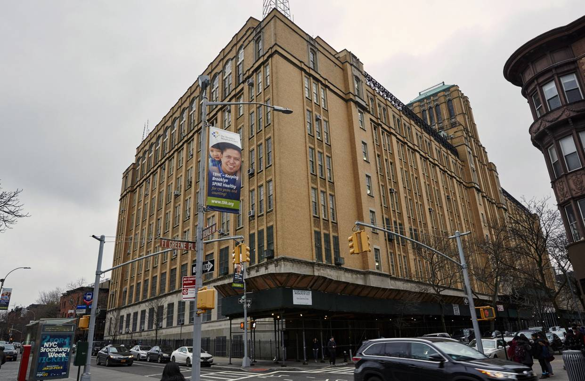
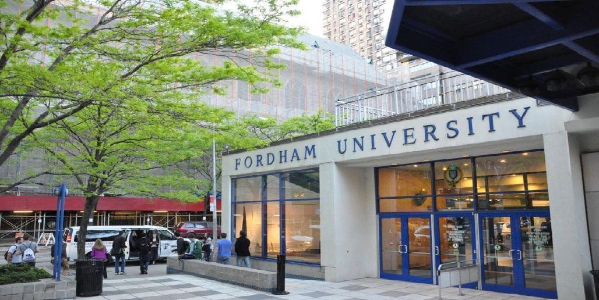

Academics
High School: Brooklyn Technical High School

- For high school, I attended Brooklyn Technical High School for four years!
- Brooklyn Tech is a specialized high school in New York City that currently houses around 6,200 students.
- Although most would say Stuyvesant is the better specialized high school in NYC, I specifically chose to go to Brooklyn Tech over them, and I haven't regretted it!
- Brooklyn Tech had a loose major system for students in their junior and senior years. I was part of the Software Engineering major, and I'd say that it gave me a good intro to the field.
- For the major, I got to learn the basics about HTML, Javascript, CSS, Java, Digital Electronics, and using a Linux terminal.
College: Fordham College at Lincoln Center

- I am currently a freshman at Fordham College at Lincoln Center!
- I am currently in the Computer Science BS major, and I plan on staying there throughout my four years here.
- I was planning to be a commuter before COVID-19 struck, but as of right now, I am only attending classes at home.
- I actually tried to go to some of my hybrid classes a few times in the beginning of the first semester, but that proved to be unsustainable given the current situation.